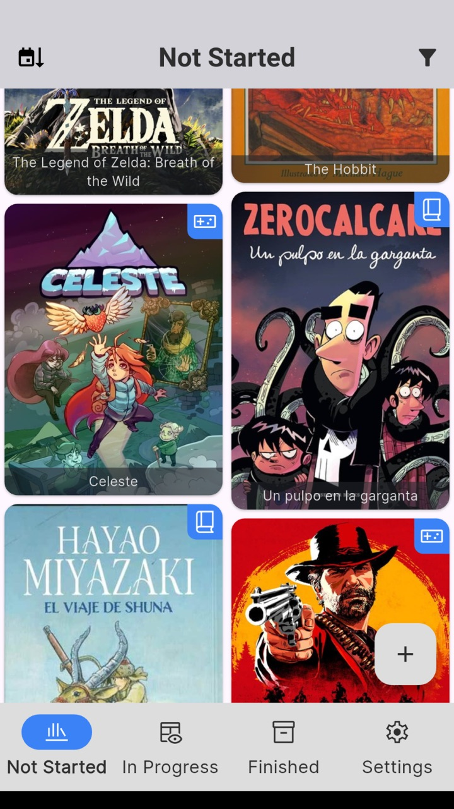
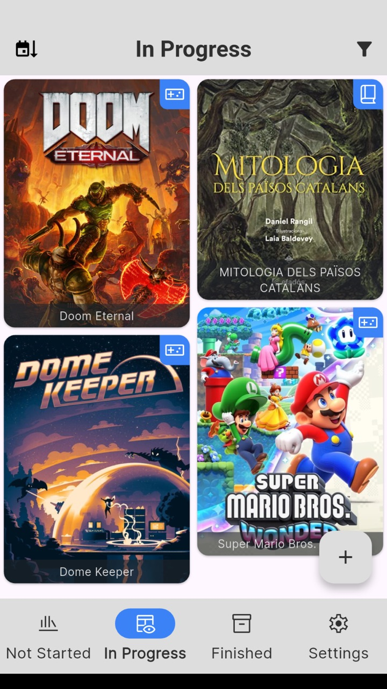
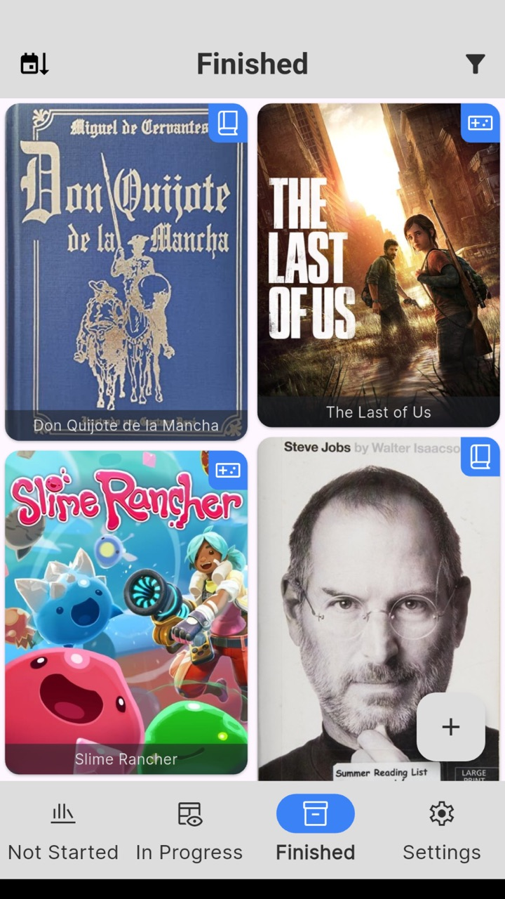

Mosaic
Aplicación de gestión del ocio hecha con Flutter, para catalogar videojuegos y libros en un solo lugar: búsqueda en bases de datos en línea, estado de progreso y cuadrícula en cascada con las portadas. Todos los datos se guardan en el dispositivo, sin cuenta.
Empezó como proyecto del curso de Flutter (diciembre de 2025) y desde entonces ha seguido creciendo.
Ficha rápida
| Campo | Valor |
|---|---|
| Rol | Desarrollo individual |
| Año | 2025–actual |
| Origen | Proyecto del curso de Flutter (diciembre de 2025) |
| Plataformas | iOS, Android, macOS |
| Tecnología | Flutter (Dart), Provider, Hive CE |
| Estado | Proyecto personal, código abierto |
| Código | github.com/ovilaro/mosaic |
| Presentación | PDF, 5 páginas |
Contexto
- El problema — el poco tiempo libre acaba en scroll infinito y el backlog no deja de crecer.
- La propuesta — una app para gestionar el ocio que queremos consumir: qué tenemos pendiente, qué tenemos a medias y qué hemos acabado.
Funciones
- Buscar y añadir — juegos vía IGDB y libros vía Open Library.
- Seguimiento del progreso — Sin empezar, En curso o Acabado.
- Cuadrícula en cascada con las portadas de la colección.
- Filtros por categoría (juegos, libros o ambos), con preferencias independientes por pestaña.
- Ordenación por fecha de alta o de modificación, ascendente o descendente.
- Ficha de detalle con portada, descripción y tabla de metadatos.
- Compartir la ficha con la imagen de portada.
- Temas claro y oscuro — blanco, negro o siguiendo el dispositivo.
- Accesibilidad — etiquetas en la barra de navegación para lectores de pantalla.
- Offline-first — datos locales con Hive CE, sin cuenta.
- Diseño adaptable — a partir de 900 px de ancho, la cuadrícula y el detalle se muestran lado a lado (en desarrollo).
Vídeo
Capturas
Entrega del curso (diciembre de 2025)


